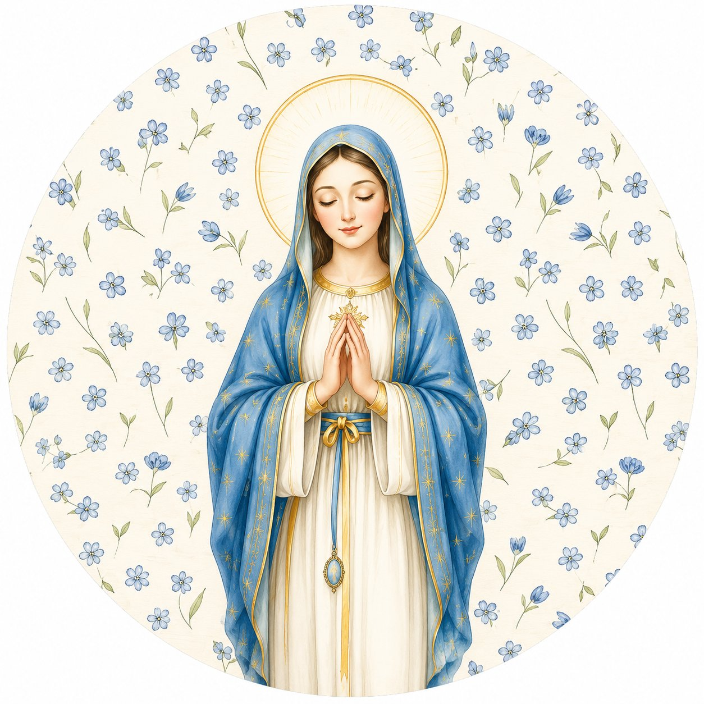
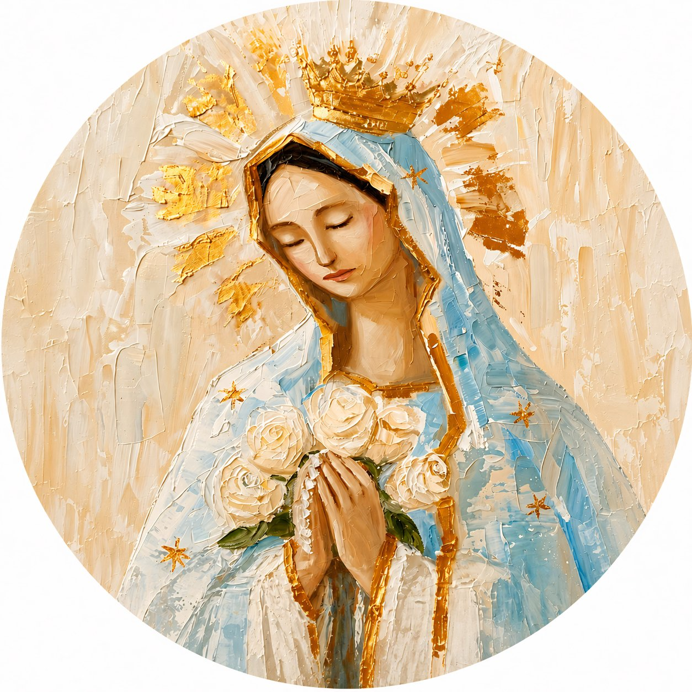
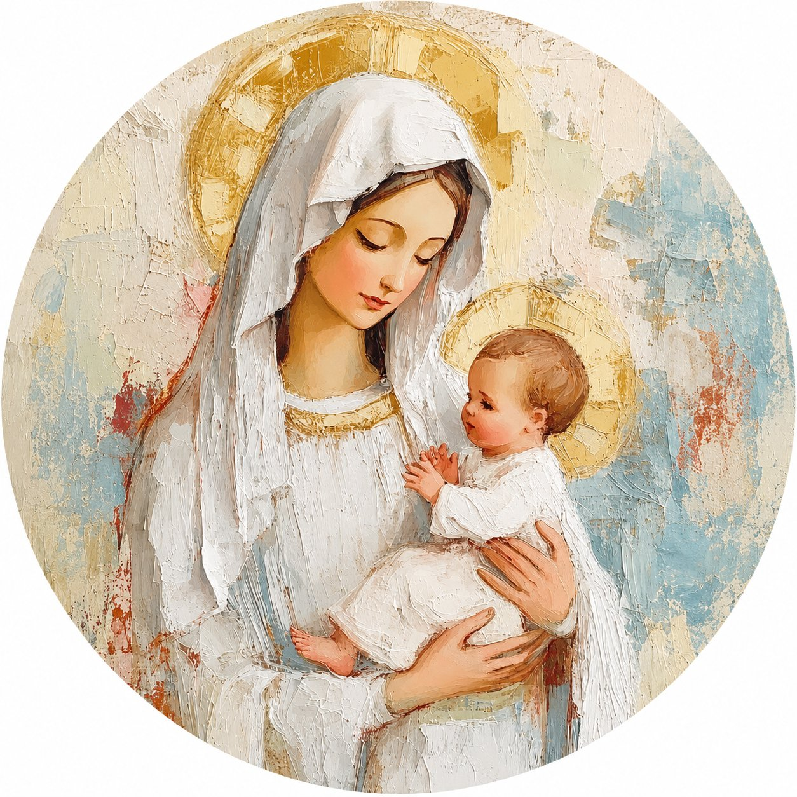

Acompaña a mamá en un momento de fe, paz y gratitud. Reza el Santo Rosario guiado, paso a paso.

El Rosario es la oración más poderosa que existe. En él encontramos paz, fortaleza y la ternura de una Madre.
— Tradición Mariana Católica
Selecciona el día y elige cómo quieres orar
🔊 Activa el sonido para escuchar la oración
Toca cada cuenta al rezar
0 / 10 Ave Marías

Sencillo y pensado para mamá.
del kit con tu celular. Esta página se abrirá automáticamente.
o elige la oración guiada paso a paso según prefieras.
y muestra los misterios correspondientes automáticamente.
Este momento es tuyo. La Virgen María te acompaña.
Todo lo que necesitas saber